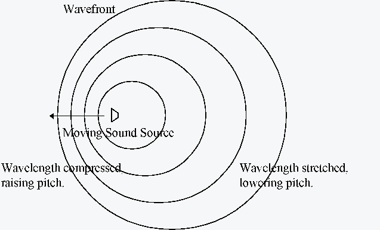

Figure 2
Figure 2This chapter discusses an approach to generating stereo or Ambisonic sound images using Csound. The focus here is not on the acoustics of the human head but on modelling sound in an acoustic space. We will use Csound to produce a ‘virtual’ acoustic space in which to move sounds and make recordings.
Stereo recordings will be made using pairs of simple virtual microphones rather than Head-Related Transfer Functions (HRTFs). This is analogous to recording with a stereo pair of microphones rather than with a dummy head. The virtual microphone approach is cruder, but simpler and faster.
Ambisonic recordings are made using a virtual Ambisonic microphone. These recordings can be played back through an Ambisonic speaker rig, producing an image of the virtual acoustic space in real acoustic space.
The major advantage of using a model of a physical space is that characteristics of the real space arise within the virtual space. For instance, delay lines can model the time it takes for sound to travel from source to ear or microphone. This provides a model of inter-aural delay for stereo, and when a sound moves quickly past the listener, it also results in ‘Doppler shift,’ whereby pitch is perceived to change.
This chapter describes a number of techniques, of which some or all can be integrated into Csound instruments, to give a sense of space and motion to sound material. A program is provided that uses Csound to create stereo or Ambisonic mixes using a common script.
Ambisonics was developed in the 70s, primarily from the theories of Michael Gerzon of the University of Oxford. Ambisonics provides a way to record and reproduce complete three-dimensional sound fields. Recordings can be made with an Ambisonic microphone which produces a ‘B-Format’ signal made up of four channels, commonly labelled W, X, Y and Z. The W channel is omni-directional and the other channels provide directional information. The encoding makes no assumptions about the number of speakers that are to be used to replay the sound - this is an issue for the ‘decoding’ stage. An advantage is that the sound field is independent of the rig it is played back over so that the same B-Format recording can be played over different arrangements of speakers. A typical small rig uses four speakers in a horizontal square, discarding the height information held in the sound field. A more satisfactory arrangement places eight speakers at the corners of a cube, but rigs with many more speakers are possible.
Another advantage of the ‘abstract’ encoding is that it is possible to manipulate a complex sound field mathematically to change the location and character of sounds within it.
For a detailed discussion of Ambisonics I recommend a look at Dave Malham’s web pages at http://www.york.ac.uk/inst/mustech/3d_audio/ambison.htm.
Csound has good facilities for the manipulation of signals and is a natural language to express a model of many aspects of acoustic space. In this model sound locations are expressed using three dimensions: x, y (both horizontal) and z (vertical). For the purposes of this text, the ‘x’ axis is arranged so that positive x is ahead and negative x behind, the ‘y’ axis is arranged so that positive y is to the left and negative y to the right and the ‘z’ axis is arranged so that positive z is above and negative z below. This arrangement of axes can seem confusing at first. The listener is assumed to be at the origin.
This text assumes a moving source, located by three control signals kx, ky and kz. For a fixed source, ix, iy and iz can be used instead and many calculations can be performed at instrument initialisation time allowing much faster processing.
As a sound wavefront spreads away from its point of origin its sound energy diminishes so that when the sound is n times away from its origin, the signal energy will be n2 times smaller. This can be modelled by multiplying the signal amplitude by 1/n. The relative amplitude of different signals and the overall reverberation in the room provide important distance cues (see reverberation below).
This law is simple to implement in Csound. Assuming we have an orchestra using kx, ky and kz to control the location of a moving sound source, we find:
kd = sqrt(kx*kx+ky*ky+kz*kz)
kamp = 1/kd
where kd is the distance of sound from the origin and kamp is the relative amplitude of the sound as it arrives. kd will be used in other expressions below.
There is a practical problem with the above equations: kamp becomes extremely loud as the sound source moves near to the origin. A solution to this problem is to limit the maximum value of kamp by adding a small amount to the divisor. Without this, Csound may stop with a division-by-zero error if the sound actually passes directly through the origin.
kd = sqrt(kx*kx+ky*ky+kz*kz)
kamp = 1/(kd+0.1)
This problem affects other processing below - in general it is best to keep sounds a realistic distance from the virtual microphone.
Sound travels at a fixed speed through air, approximately 332m/s, although the exact speed varies with atmospheric conditions such as temperature and wind. The difference in time taken for the sound to reach each ear (the ‘inter-aural’ difference) provides important clues to the direction to the sound source. If a sound is angled more towards the right ear then the sound will reach the right ear first and then there will be a tiny delay (typically less than 1.5ms) before it reaches the left. In fact different frequencies are delayed different amounts because of the shape of the head. However in our model we are using virtual microphones rather than a model of the human head and so will use delay with a flat frequency response.
If physical delay is modelled,
at least crudely, then our acoustic model will also exhibit the
phenomenon of Doppler Shift - a sound moving at speed causes its
wave fronts to bunch up and stretch out, ahead of and behind the
source: this causes a raising and lowering of pitch. The traditional
example of this is a train moving past a listener at speed: the
sound of the train seems to jump downwards in pitch as it passes.
This is a useful auditory cue.

Figure 1
Csound’s delay lines are not ideally suited to the task of modelling moving sources. Csound’s delayw, delayr and deltapi units will be used here, however changing the time setting on deltapi is more equivalent to moving the listener rather than the sound source. The effect is qualitatively acceptable using Csound code such as the following:
adummy delayr 5 ; do not need a delay
over 5secs
adelayed deltapi kd/332
delayw asigundelayed
where asigundelayed is the input signal and adelayed is the delayed signal, kd is the distance of the sound from the origin (as calculated above) and 332 is the speed of sound in air at room temperature.
Sound waves are transmitted by many tiny air molecules bouncing off one another. These molecules absorb energy and different amounts are absorbed at different frequencies, with the highest frequencies damped most (in fact the characteristics vary with atmospheric conditions). We shall give an impression of this damping using a low-pass filter provided by Csound’s tone unit generator. This gives a steeper slope than is natural but is easy to implement:
afilt tone ain,22000/(1+kd)
where ain is the sound before filtering, afilt is the signal after and kd is the distance of the sound from the origin as calculated above.
The first, ‘early’ reflections of a sound source as compared to the ‘direct’ sound provide important cues to localisation of the source. Their timing, amplitudes and angles are important and a model of these can provide strong auditory cues, both for direction and distance.
The locations of imaginary ‘reflected’ sound sources can be calculated using techniques similar to those used in graphical ‘ray-tracing’ systems. These techniques are not simple. The reflection of a sound source off a flat surface can be modelled by imagining another source, with a 180-degree phase shift, behind the reflecting surface. Note that moving sound sources produce moving reflections. Sound is also absorbed by surfaces and the signal will not have the same amplitude and frequency characteristics as the signal before reflection.
Vector manipulation is not easy in Csound and I would not recommend attempting it. A relatively simple implementation of early reflections uses C program code that generates imaginary sound sources by reflecting the actual sound sources off the walls of a box-shaped room. Reflected sound sources are passed to Csound in the same way as direct sound sources with certain modifications. These modifications include a 180-degree phase shift on reflection and the absorption of a proportion of signal amplitude. Absorption on real surfaces would not have a flat frequency response but using one simplifies calculation.
Reflected sound sources will be further away than the direct sound source and can be processed as if they originated at a more distant sound source for the purposes of modelling other distance cues.
The later and denser reflections (typically those after about 80ms) provide information through overall density and timbre rather than through individual characteristics. These ‘late’ reflections tend to have a fairly static overall level regardless of where in the room a sound source is, unlike the direct sound, which is affected by the inverse square law. The relative level of direct and reverberated sound is an important distance cue. For Ambisonic purposes, late reflections are usually fed direct into the ‘direction-less’ W channel.
Late reflections can be provided by passing all sound sources to a single ‘conventional’ reverberation instrument with early reflections disabled. It is worth applying low-pass filtering and delay before passing the sound to the reverberation unit as otherwise the reverberated sound risks arriving earlier and brighter than the direct sound.
Many microphones have a ‘cardioid’ response, meaning that the relative amplitude (r) of a sound depends on the angle of the sound from the microphone (q) with the equation
r = 0.5(cos(q) + 1)
A larger family of microphones has responses characterised by the more general equation
r = acos(q) + b
where a and b are
constants. Specific values of a and b give different
microphone responses. When a = b = 0.5 we have the
cardioid response as before. When a = 0 and b =
1 we have an ‘omni-directional’ response. When a
= 1 and b = 0 we have a ‘figure-of-eight’ response.
For microphones pointing along the ‘x’ axis, these responses
can be shown as follows:
Figure 2
It is simple enough to express the above equations in Csound. However it can be harder to work out the angle of the sound to the microphone, particularly when the microphone is angled. However with a little trigonometry we find equations which can be expressed in Csound as:
iangleofmike = 0.7854 ; equals 45
degrees
imikea = 0.5 ; basic cardioid response
imikeb = 0.5 ; basic cardioid response
icosaom = cos(iangleofmike)
isinaom = sin(iangleofmike)
kcosangletomike = (icosaom*kx+isinaom*ky)/kd
kresp = imikea*kcosmikesoundangle+imikeb
amikeoutput = asig*kresp
Placing two such microphones angled at pi/4 and -pi/4 (0.7854 and -0.7854) provides a standard ‘crossed-pair’ configuration at right angles, flat, at the origin and with ‘forwards’ along the x-axis. Note that angles are expressed in radians, not degrees. pi/4 (0.7854) radians correspond to 45 degrees.
Placing both microphones at the origin will cause the sound to arrive at both microphones at the same time. As these two microphones are placed at the same point, sounds will arrive at them at the same time, losing the advantages of delay lines above. With a little more mathematics microphones can be placed at arbitrary points and angles to produce an microphone configuration suiting the style of recording required.
An Ambisonic microphone records four related signals rather than one. We assume that the microphone is placed at the origin of our three-dimensional co-ordinate system and that the sound source is located at the anti-clockwise angle a from the positive x-axis (directly ahead) and with an angle of elevation e. In this case the response of the microphone on each channel is:
aw
= 0.707
ax = cos(a) cos(e)
ay = sin(a) cos(e)
az = sin(e)
With some trigonometry the above can be rearranged and expressed in Csound as:
iaw = 0.707
kax = kx/kd
kay = ky/kd
kaz = kz/kd
where kx, ky and kz provide the co-ordinates of the sound and kd is the distance of the sound from the origin, as calculated above. We can now generate an Ambisonic signal using
aambw = asig*iaw
aambx = asig*kax
aamby = asig*kay
aambz = asig*kaz
outq aambw,aambx,aamby,aambz
where asig is a mono signal processed for other distance cues. Note that this outq statement assumes that the four output channels are ordered W, X, Y, Z. For historical reasons some Ambisonic hardware expects the order X, W, Y, Z but this can easily be handled while wiring the system.
Decoding Ambisonics in Csound
An Ambisonic signal aambw, aambx, aamby, aambz can be decoded for four channels using the following Csound code:
afl = aambw+0.707*(aambx+aamby)
abl = aambw+0.707*(aamby-aambx)
abr = aambw-0.707*(aambx+aamby)
afr = aambw+0.707*(aambx-aamby)
outq afr,abl,abr,afr
This produces feeds for four speakers that are expected to be located on the corners of a square around the listener in the following order: front-left, back-left, back-right, front-right. This throws away the Z channel and the ‘height’ information contained within it.
One of the advantages of Ambisonic encoding is that entire sound fields can be manipulated. A simple example of this is the following Csound code that rotates a sound field horizontally around the listener by angle kangle anticlockwise:
abw = aaw
abx = aax*cos(kangle)-aay*sin(kangle)
aby = aax*sin(kangle)+aay*cos(kangle)
abz = aaz
where aaw, aax, aay, aaz form the Ambisonic input signal, kangle is a varying angle and abw, abx, aby, abz form the output. Much more complex manipulations are possible, again by embedding equations within Csound orchestras. Possibilities include tumbling a sound field with a moving angle of rotation, shrinking or expanding the sound field and zooming towards a point within it.
Included on the CDROM with this book is a C program that reads simple scripts describing the mixing and movement of sound sources and which then uses Csound to generate stereo or Ambisonic soundfiles. Mono soundfiles can also be produced quickly but crudely to check that sounds have been mixed sensibly. The program models the aspects of spatialisation described below with some refinement. For the latest version of this and related programs see http://www.muse.demon.co.uk.
There is also an alternative system for Ambisonic output using a Csound orchestra without supporting C code. This is difficult to use and does not provide early reflections, however it only requires Csound to run and allows more complex paths for moving sources.
Using a virtual acoustic space allows a piece to be developed with careful control over the whereabouts of sound within it. An analytical approach to modelling the space can provide independence from the method used to reproduce the sound, allowing a piece to be developed and performed with different equipment but using a single spatialisation script. The techniques described above and the ‘Space’ program provide facilities to produce recordings suitable for spatialisation using techniques from mono and stereo to full Ambisonic sound production.
Thanks to Dave Malham and Dylan Menzies-Gow of the University of York for assistance with previous Ambisonic projects and to Dave Malham for his advice on this text.